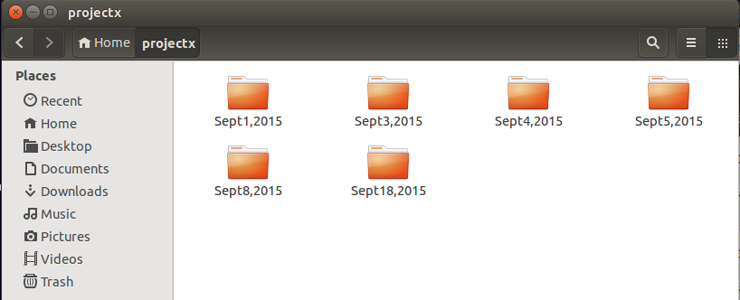

24b9da6552252987aa493b52f8696cd6d3b00373
git config --global user.name "John Doe" git config --global user.email "johndoe@example.com" git config --global core.editor "nano"
git initgit clone {repo_url} {directory_name} git add {filename}git status
git commit -m “Commit message”git statusgit loggit remote -vgit remote add {remote_name} {repo_url}
git push {remote_name} {branch_name}
.. or if you didn't like it, then use your newfound knowledge of git to open an issue and contribute here on GitHub.
Questions?